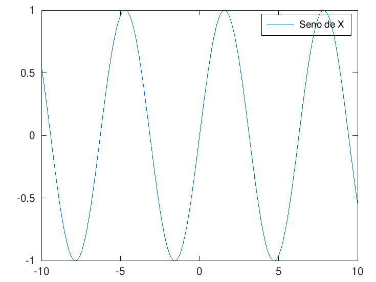
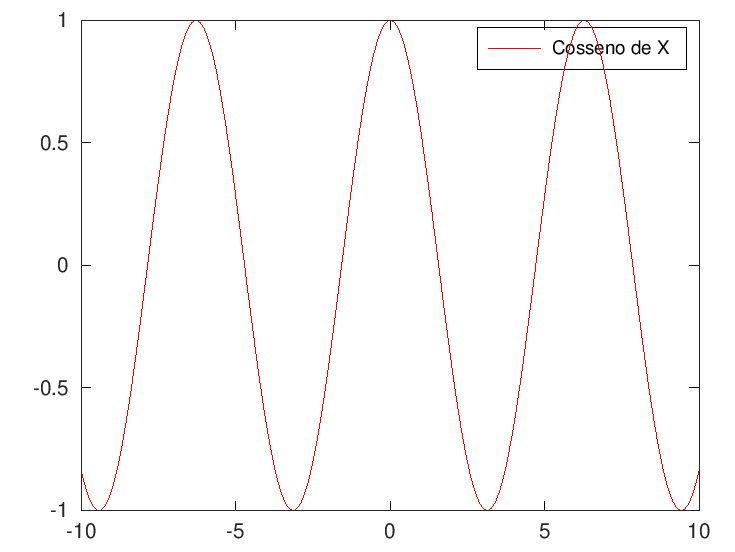
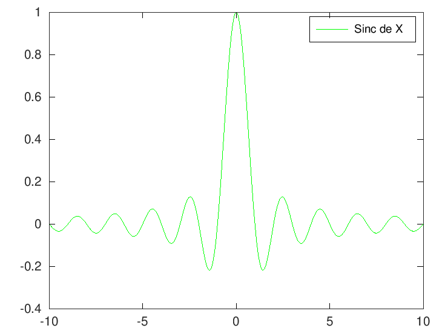
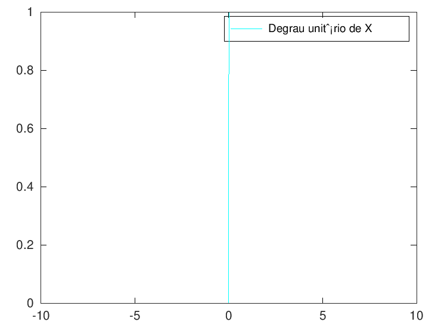
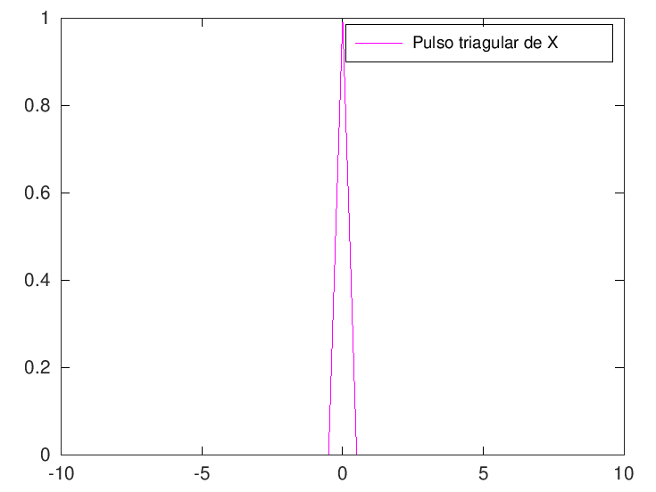
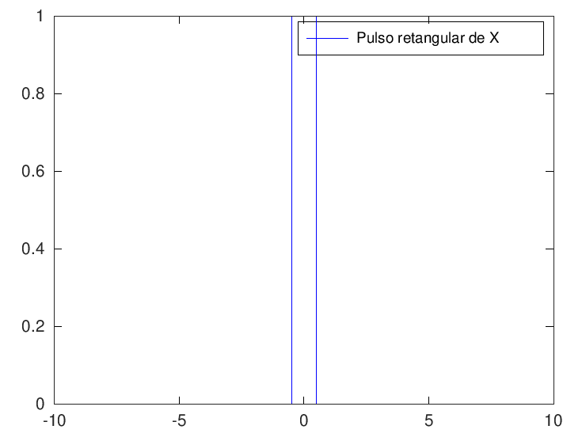
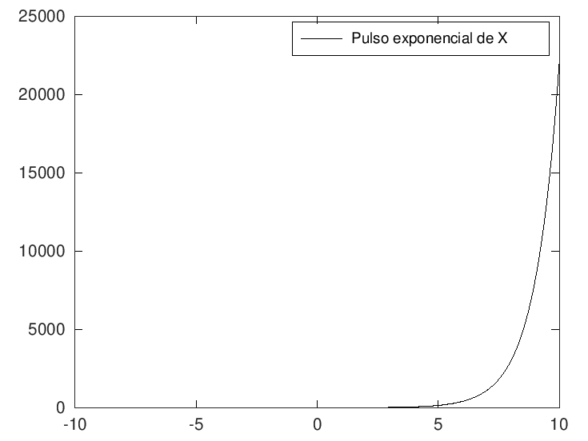
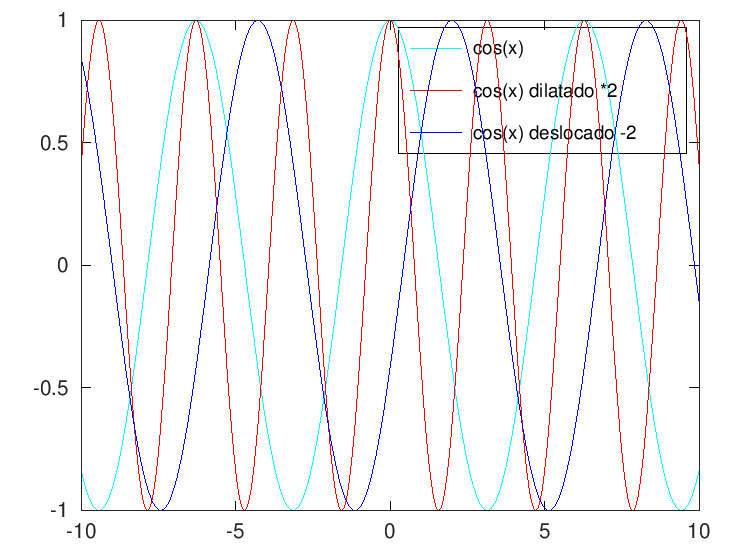
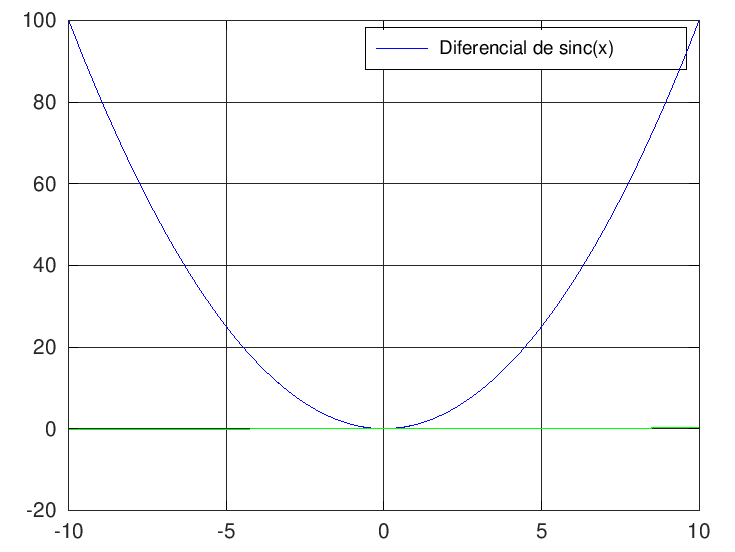
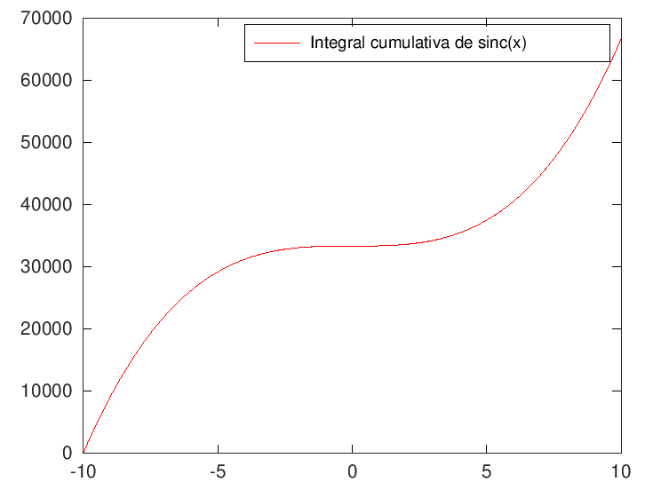

<!DOCTYPE html>
<html>
<head>
<meta charset="UTF-8">
<title>Projeto 01</title>
<script type="text/x-mathjax-config">
MathJax.Hub.Config({
  tex2jax: { inlineMath: [['$','$'], ['\\(','\\)']] },
  TeX: { equationNumbers: { autoNumber: 'all' } }
});
</script>
<script type="text/javascript" async src="https://cdnjs.cloudflare.com/ajax/libs/mathjax/2.7.1/MathJax.js?config=TeX-MML-AM_CHTML"></script>

<style>
body > * {
  max-width: 42em;
}
body {
  font-family: "Roboto Condensed", sans-serif;
  padding-left: 7.5em;
  padding-right: 7.5em;
}
pre, code {
  max-width: 50em;
  font-family: monospace;
}
pre.oct-code {
  border: 1px solid Grey;
  padding: 5px;
}
pre.oct-code-output {
  margin-left: 2em;
}
span.comment {
  color: ForestGreen;
}
span.keyword {
  color: Blue;
}
span.string {
  color: DarkOrchid;
}
footer {
  margin-top: 2em;
  font-size: 80%;
}
a, a:visited {
  color: Blue;
}
h2 {
  font-family: "Roboto Condensed", serif;
  margin-top: 1.5em;
}
h2 a, h2 a:visited {
  color: Black;
}
</style>

</head>
<body>
<h1>Projeto 01</h1>

<p>Autor: Marlon da Silva Rogério</p>

<h2>Contents</h2>
<ul>
<li><a href="#node1">Referências</a></li>
<li><a href="#node2">Parte 01</a></li>
<li><a href="#node3">Parte 02</a></li>
<li><a href="#node4">Parte 03</a></li>
</ul>
<h2><a id="node1">Referências</a></h2>
<p>GONZALEZ, R. C., WOODS, R. E. Processamento de Imagens Digitais. Editora Edgard Blucher, ISBN  São Paulo, 2000.
Support MathWorks, 2021. Disponível em: <a href="https://www.mathworks.com/help/">https://www.mathworks.com/help/</a>. Acesso  em: 10 de abr. de 2021.
Installation Packages, 2021. Disponível em: <a href="https://octave.sourceforge.io/">https://octave.sourceforge.io/</a>. Acesso em: 10 de abr. de 2021.</p>
<h2><a id="node2">Parte 01</a></h2>
<p>(1) Implementar funções (com parâmetros)
Sintetizar sinais: sin(x); cos(x); sinc(x); degrau unitário, triângulo, retângulo, pulso exponencial.
Visualizar tais sinais em 2000 pontos (eixo x onde x será o tempo, centradas no zero e normalizadas*)</p>

<pre class="oct-code">close all; clear; clc;
<span class="comment">% Função seno de X</span>
x = linspace(-10, 10, 2000);
y = sin(x);
plot(x, y)
legend(<span class="string">"Seno de X"</span>)

<span class="comment">% Função consseno de X</span>
x = linspace(-10, 10, 2000);
y = cos(x);
figure
plot(x, y, <span class="string">'r'</span>)
legend(<span class="string">"Cosseno de X"</span>)

<span class="comment">% Função sinc de X</span>
x = linspace(-10, 10, 2000);
y = sinc(x);
figure
plot(x, y, <span class="string">'g'</span>)
legend(<span class="string">"Sinc de X"</span>)

<span class="comment">% Função Degrau Unitário de X</span>
x = linspace(-10, 10, 2000);
y = heaviside(x);
figure
plot(x, y, <span class="string">'c'</span>)
legend(<span class="string">"Degrau unitário de X"</span>)

<span class="comment">% Função Pulso triagular de X</span>
x = linspace(-10, 10, 2000);
y = tripuls(x);
figure
plot(x, y, <span class="string">'m'</span>)
legend(<span class="string">"Pulso triagular de X"</span>)

<span class="comment">% Função Pulso retangular de X</span>
x = linspace(-10, 10, 2000);
y = rectpuls(x);
figure
plot(x, y, <span class="string">'b'</span>)
legend(<span class="string">"Pulso retangular de X"</span>)

<span class="comment">% Função Pulso exponencial de X</span>
x = linspace(-10, 10, 2000);
y = exp(x);
figure
plot(x, y, <span class="string">'k'</span>)
legend(<span class="string">"Pulso exponencial de X"</span>)</pre>

<pre class="oct-code-output">ans = -92.709
ans = -78.009
ans = -64.477
ans = -50.162
ans = -36.704
ans = -22.934
ans = -8.3376
</pre>
<h2><a id="node3">Parte 02</a></h2>
<p>(2) Escolha um sinal sintetizado acima. Aplicar uma Dilatação e um Deslocamento
Visualizar o sinal original, sinal dilatado e o deslocado. Os três sinais -- original, dilatação e deslocado-- na mesma figura.</p>

<pre class="oct-code">close all; clear; clc;
<span class="comment">%A função escolhida: cosseno de X</span>

x = linspace(-10, 10, 2000);
y = cos(x);
dilatacao = 2;
ydilatado = cos(x*dilatacao);

deslocamento = 2
ydeslocado = cos(x-deslocamento);

plot(x, y, <span class="string">'c'</span>)
hold on
plot(x, ydilatado, <span class="string">'r'</span>)
plot(x, ydeslocado, <span class="string">'b'</span>)
legend(<span class="string">"cos(x)"</span>, <span class="string">"cos(x) dilatado *2"</span>, <span class="string">"cos(x) deslocado -2"</span>)
hold off</pre>

<pre class="oct-code-output">deslocamento = 2
ans = -90.919
</pre>
<h2><a id="node4">Parte 03</a></h2>
<p>(3). Escolha um sinal sintetizado acima (1). Processar os sinais sintetizados e aplicar: Integral e a Derivada
Visualizar em uma figura o sinal original, a derivada e o comportamento da integral *
* a integração pode ser desde o ponto inicial até um ponto t, visualizar em t</p>

<pre class="oct-code">close all; clear; clc;
<span class="comment">%A função escolhida: sinc de X</span>
x = linspace(-10, 10, 2000);
y = x.^2;
diferencial = diff(y);
plot(x, y,<span class="string">'b'</span>)
legend(<span class="string">"Função sinc de x"</span>)
grid on; hold on
plot(x(1:end-1), diferencial,<span class="string">'g'</span>)
legend(<span class="string">"Diferencial de sinc(x)"</span>)
integral =[];
<span class="keyword">for</span> index=1:length(y)
    integral(index) = trapz(y(1:index));
<span class="keyword">end</span>
figure;
plot(x,integral,<span class="string">'r-'</span>)
legend(<span class="string">"Integral cumulativa de sinc(x)"</span>)</pre>

<pre class="oct-code-output">ans = -92.264
ans = -92.264
ans = -77.743
</pre>

<footer>
<hr>
<a href="https://www.octave.org">Published with GNU Octave 6.2.0</a>
</footer>
<!--
##### SOURCE BEGIN #####
%% Projeto 01
% Autor: Marlon da Silva Rogério

%% Referências
% GONZALEZ, R. C., WOODS, R. E. Processamento de Imagens Digitais. Editora Edgard Blucher, ISBN  São Paulo, 2000.
% Support MathWorks, 2021. Disponível em: <https://www.mathworks.com/help/>. Acesso  em: 10 de abr. de 2021.
% Installation Packages, 2021. Disponível em: <https://octave.sourceforge.io/>. Acesso em: 10 de abr. de 2021.

%% Parte 01
% (1) Implementar funções (com parâmetros)
% Sintetizar sinais: sin(x); cos(x); sinc(x); degrau unitário, triângulo, retângulo, pulso exponencial.
% Visualizar tais sinais em 2000 pontos (eixo x onde x será o tempo, centradas no zero e normalizadas*)

close all; clear; clc;
% Função seno de X
x = linspace(-10, 10, 2000);
y = sin(x);
plot(x, y)
legend("Seno de X")

% Função consseno de X
x = linspace(-10, 10, 2000);
y = cos(x);
figure
plot(x, y, 'r')
legend("Cosseno de X")

% Função sinc de X
x = linspace(-10, 10, 2000);
y = sinc(x);
figure
plot(x, y, 'g')
legend("Sinc de X")

% Função Degrau Unitário de X
x = linspace(-10, 10, 2000);
y = heaviside(x);
figure
plot(x, y, 'c')
legend("Degrau unitário de X")

% Função Pulso triagular de X
x = linspace(-10, 10, 2000);
y = tripuls(x);
figure
plot(x, y, 'm')
legend("Pulso triagular de X")

% Função Pulso retangular de X
x = linspace(-10, 10, 2000);
y = rectpuls(x);
figure
plot(x, y, 'b')
legend("Pulso retangular de X")

% Função Pulso exponencial de X
x = linspace(-10, 10, 2000);
y = exp(x);
figure
plot(x, y, 'k')
legend("Pulso exponencial de X")

%% Parte 02
% (2) Escolha um sinal sintetizado acima. Aplicar uma Dilatação e um Deslocamento
% Visualizar o sinal original, sinal dilatado e o deslocado. Os três sinais -- original, dilatação e deslocado-- na mesma figura.
close all; clear; clc;
%A função escolhida: cosseno de X

x = linspace(-10, 10, 2000);
y = cos(x);
dilatacao = 2;
ydilatado = cos(x*dilatacao);

deslocamento = 2
ydeslocado = cos(x-deslocamento);

plot(x, y, 'c')
hold on
plot(x, ydilatado, 'r')
plot(x, ydeslocado, 'b')
legend("cos(x)", "cos(x) dilatado *2", "cos(x) deslocado -2")
hold off


%% Parte 03
% (3). Escolha um sinal sintetizado acima (1). Processar os sinais sintetizados e aplicar: Integral e a Derivada
% Visualizar em uma figura o sinal original, a derivada e o comportamento da integral *
% * a integração pode ser desde o ponto inicial até um ponto t, visualizar em t

close all; clear; clc;
%A função escolhida: sinc de X
x = linspace(-10, 10, 2000);
y = x.^2;
diferencial = diff(y);
plot(x, y,'b')
legend("Função sinc de x")
grid on; hold on
plot(x(1:end-1), diferencial,'g')
legend("Diferencial de sinc(x)")
integral =[];
for index=1:length(y)
    integral(index) = trapz(y(1:index));
end
figure;
plot(x,integral,'r-')
legend("Integral cumulativa de sinc(x)")


##### SOURCE END #####
-->
</body>
</html>
